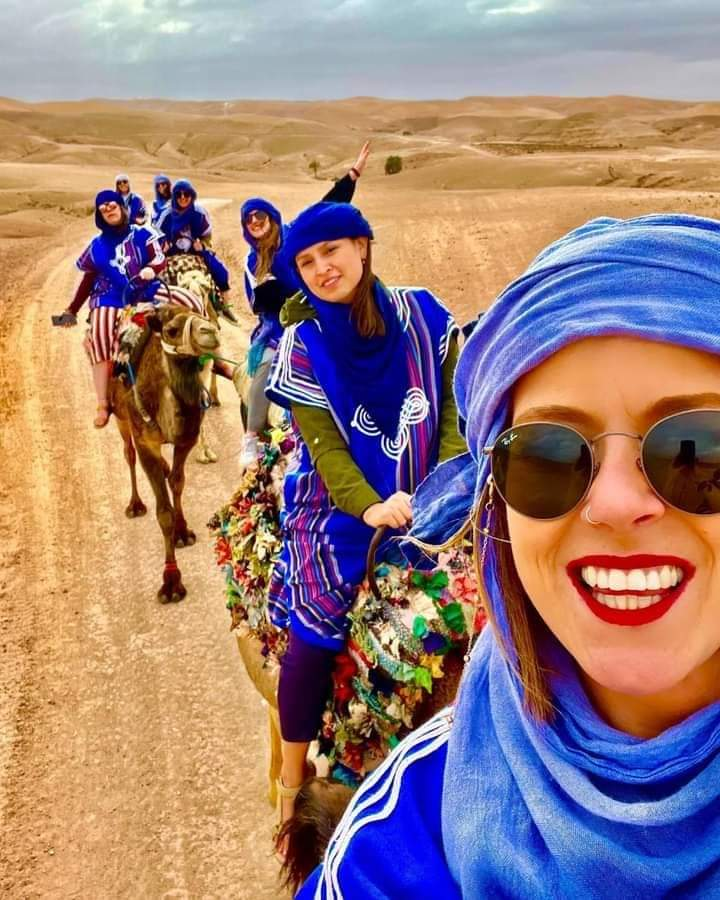
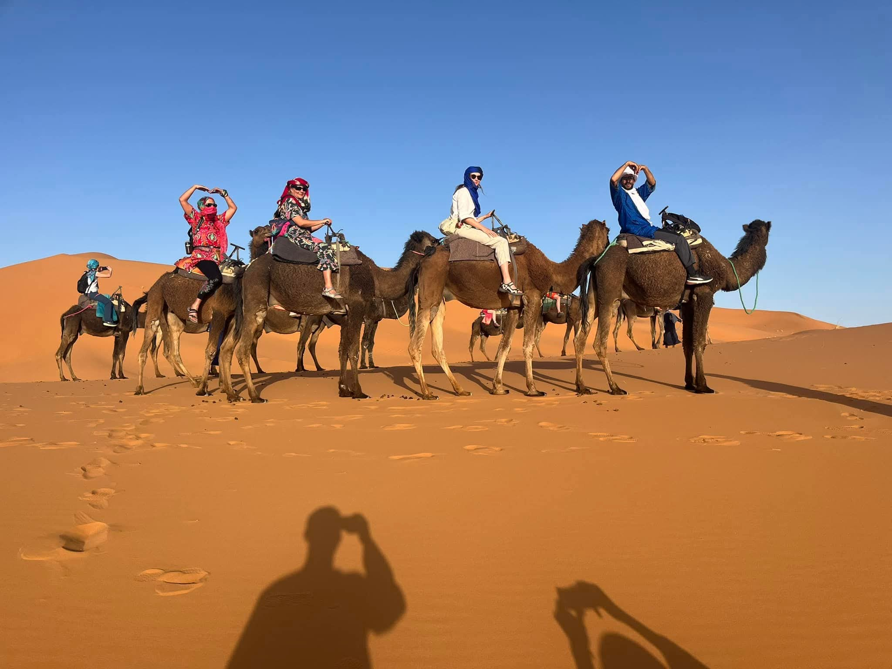

Escape the hustle and bustle of Marrakech and enjoy an unforgettable evening in the stunning Agafay Desert. Your adventure begins with a pick-up from your accommodation in Marrakech. On the way to Agafay, you will visit a local Argan oil cooperative, where you will be welcomed with a traditional Moroccan tea. During the visit, local women will explain the traditional process of producing Argan oil and its many uses. Afterward, continue to the Agafay Desert camp, where you can enjoy a camel ride and, for those seeking more adventure, there is also the option to take a quad bike ride (optional activity). As the sun sets over the desert landscape, relax and take in the breathtaking views before settling in for a memorable evening. Enjoy a delicious Moroccan dinner accompanied by traditional Berber music, a live entertainment show, and a spectacular fire performance under the stars. After dinner and the evening show, you will be transferred back to your accommodation in Marakech. The return journey takes approximately one hour. Highlights. Experience the magic of the Agafay Desert and enjoy an authentic Moroccan evening filled with culture, adventure, and unforgettable memories
Hotel/riad pick-up and drop-off in Marrakech
Visit to a traditional Argan oil cooperative
Moroccan tea experience
Camel ride in the Agafay Desert
Optional quad biking adventure
Stunning sunset views
Traditional Moroccan dinner
Live Berber music and entertainment
Duration: Approximately 6–7 hours
Departure: Marrakech
Return: Marrakech accommodation

Day 1: Marrakech – High Atlas Mountains – Ait Ben Haddou – Ouarzazate – Dades Valley
After breakfast, your 3 Days Marrakech to Merzouga Desert Tour begins with an early pick-up from your accommodation in Marrakech. Travel through the spectacular High Atlas Mountains, crossing the famous Tizi n'Tichka Pass (2,260 m), the highest mountain pass in Morocco. Along the way, enjoy breathtaking panoramic views, traditional Berber villages, and scenic mountain landscapes, with several stops for photos.
Continue to the UNESCO World Heritage Site of Ait Ben Haddou, Morocco's most famous fortified village. Explore this ancient kasbah, which has appeared in many international films and TV series, including Gladiator, Game of Thrones, The Mummy, and Lawrence of Arabia.
After lunch, drive to Ouarzazate, known as the "Hollywood of Africa," before continuing through the beautiful Skoura Oasis and the fragrant Valley of Roses in Kalaat M'Gouna. Arrive in the spectacular Dades Valley, famous for its dramatic rock formations and winding roads.
Enjoy dinner and an overnight stay in a comfortable hotel.
Day 2: Dades Valley – Todra Gorge – Erfoud – Merzouga – Camel Trek – Luxury Desert Camp
After breakfast, continue your journey through the stunning landscapes of southern Morocco toward Todra Gorge, one of the country's most impressive natural attractions. Take time to walk through the towering canyon walls, where crystal-clear water flows between cliffs reaching up to 300 meters high.
Continue via Tinjdad and Erfoud, renowned for its fossil workshops and date palm oases. You may visit a local fossil museum before reaching Merzouga, the gateway to the magnificent Erg Chebbi Sand Dunes.
Here, leave your vehicle behind and enjoy an unforgettable camel trek across the golden dunes. Stop on top of the dunes to admire one of the most beautiful sunsets in the Sahara Desert before arriving at your luxury desert camp.
Enjoy a traditional Moroccan dinner, Berber music around the campfire, and a magical night beneath the stars.
Day 3: Merzouga – Draa Valley – Ouarzazate – High Atlas Mountains – Marrakech
Wake up early to witness the unforgettable Sahara Desert sunrise over the dunes before enjoying breakfast at the camp.
Begin the journey back to Marrakech, passing through the beautiful desert landscapes, the Draa Valley, Ouarzazate, and the majestic High Atlas Mountains. Stop along the way for lunch and panoramic viewpoints before crossing the Tizi n'Tichka Pass once again.
Arrive in Marrakech in the early evening, where your unforgettable 3-day Morocco desert adventure comes to an end.
Why Choose This 3 Days Marrakech to Merzouga Desert Tour?
Cross the spectacular High Atlas Mountains.
Visit the UNESCO-listed Ait Ben Haddou Kasbah.
Discover the Valley of Roses and Dades Valley.
Explore the breathtaking Todra Gorge.
Experience a camel trek through the Erg Chebbi dunes.
Spend the night in a luxury Sahara Desert camp.
Watch unforgettable sunset and sunrise over the Sahara.
Travel with an experienced local guide and comfortable transport.